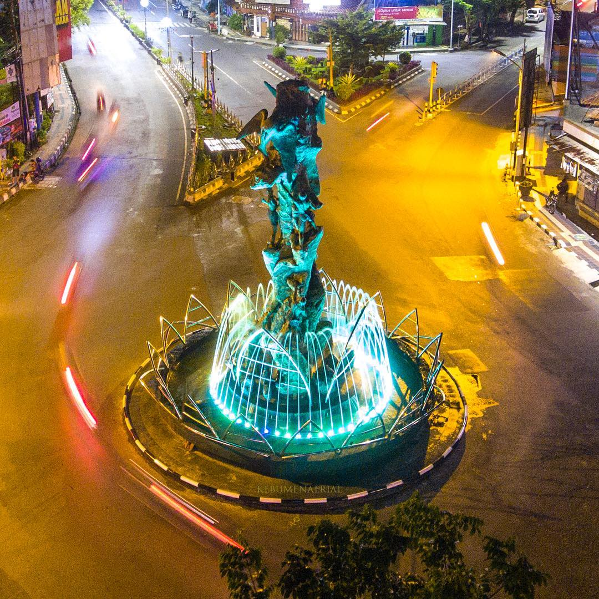

Sesuai amanat Surat Edaran Bupati Kebumen Nomor 9 Tahun 2022 yang terbit pada ....
Sesuai amanat Surat Edaran Bupati Kebumen Nomor 3 Tahun 2021 yang terbit pada ....

Kawasan Pesisir Bakal Jadi Andalan Kebumen di Sektor Pariwisata